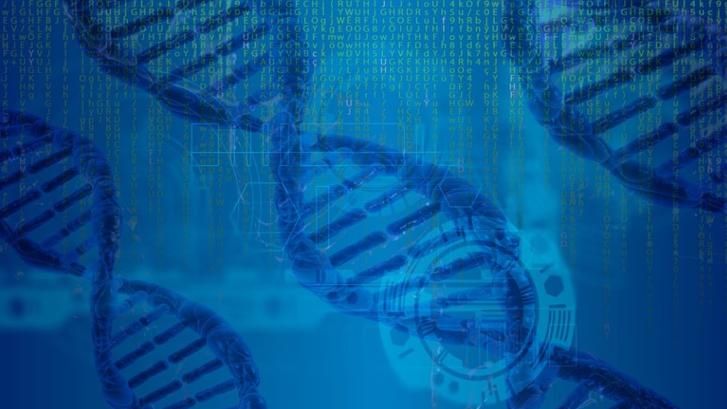

La Bio-Informatique
La bio-Informatique est un domaine regroupant les disciplines numériques (Informatique et mathématique) et les sciences de la vie (biologie, écologie etc.). La recherche biomédicale a de plus en plus besoin de l'informatique pour du stockage, pour de la simulation et de l'anayse de données poussées. Les bio-informaticiens établissent des théories qui nous permettent de comprendre et visualiser des dynamiques de processus complexes qui sont les fondement de la vie. Il nous permmetent de reconstruire l'histoire de l'évolution grâce à des immenses bases de données sur l'ADN par exemple.
Ce domaine est en effervescence. L'évolution continuelle et complexe du domaine biomédical permet une multitudes de possibilités pour les informaticiens interessés par les sciences appliquées.